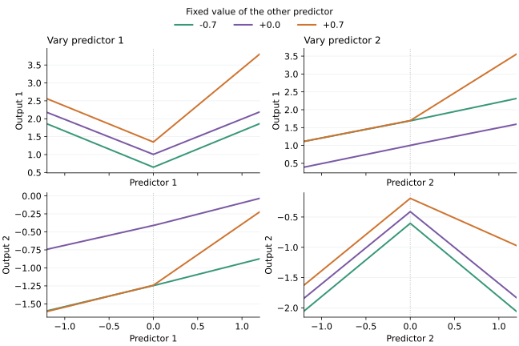

Continuous trees
fit_continuous_tree fits a multivariate regression tree whose joined leaf polynomials agree on every shared face. The resulting function is continuous across the whole predictor space. It is a separate model family from fit_tree: it uses conjugate normal-noise regression and marginal evidence rather than a selectable loss.
Fit and predict
Rows of X are observations and columns are numeric predictors. Both X and y must be finite. A vector target fits one output; an n × q matrix fits q independent output posteriors with shared tree geometry and design.
using LinearTrees
grid = collect(range(-1.0, 1.0; length=15))
X = reduce(vcat, ([x1 x2] for x1 in grid for x2 in grid))
y = 1 .+ abs.(X[:, 1]) .+ 0.5X[:, 2] .+
max.(X[:, 1], 0) .* max.(X[:, 2], 0)
model = fit_continuous_tree(X, y;
pairs=[(1, 2)], max_splits=3, n_thresholds=1, min_leaf=10)
location = predict(model, X)
(length(location), all(isfinite, location))(225, true)Use predict! when an output buffer is already available. For a vector target, both methods use a length-n vector. For a matrix target, they use an n × q matrix.
out = similar(location)
predict!(out, model, X)
out == locationtruePredictive uncertainty
predictive returns a named tuple (location, scale2, dof) describing the marginal Student-t distribution at each query row. The default observation=true includes observation noise. Set observation=false for the latent mean function.
posterior = predictive(model, X; observation=false)
(size(posterior.location), size(posterior.scale2), posterior.dof > 0)((225,), (225,), true)For a vector target, location and scale2 are vectors and dof is a scalar. For an n × q target, the first two are n × q matrices and dof is a length-q vector. Student-t scale2 is its squared scale parameter, not its variance. When dof > 2, the variance is scale2 * dof / (dof - 2).
These distributions condition on the chosen tree, pair graph, training-data normalization, and hyperparameters. They do not include uncertainty from model selection or preprocessing.

This four-leaf tree fits two outputs on a two-predictor grid. Each panel varies one predictor while holding the other fixed. The dotted line marks a split. The fitted lines meet there, while their slopes can change. The plot sources are bench/continuous_slices.jl and bench/continuous_slices.py.
Leaf model and continuity
Each leaf uses an intercept, every main effect, and selected pair products:
\[f_\ell(x) = \theta_{\ell,0} + \sum_j \theta_{\ell,j}x_j + \sum_{(j,k)\in E}\theta_{\ell,jk}x_jx_k.\]
Set pairs=:none for main effects only, pairs=:all for every pair, or pass a vector such as [(1, 2), (2, 3)]. Pair indices refer to columns of X. Automatic pair selection is not part of the public interface.
Equality of the complete polynomial traces on each shared leaf face makes every coordinate slice continuous and piecewise linear. Derivatives need not be continuous. The basis has no interactions above order two, so it cannot represent a general three-way interaction.
Prediction routes a row to one leaf and evaluates that leaf polynomial. It does not clip predictors to their training ranges, so the fitted polynomial extrapolates outside the observed region.
Conditional posterior
Predictors and each target coordinate are normalized using training rows only; the fitted transforms are stored and reused at prediction. A constant target uses scale one. The solver uses Float64.
Let D be the raw routed leaf design and let C\theta=0 collect all face constraints. An orthonormal nullspace basis N gives \theta=N\beta and B=DN. With coefficient precision \lambda,
\[\beta\mid\sigma^2 \sim \mathcal N(0,\sigma^2\lambda^{-1}I), \qquad \sigma^2 \sim \operatorname{InverseGamma}(a_0,b_0).\]
For normalized target z, the posterior uses
\[\Lambda=B^\mathsf{T}B+\lambda I,\quad m=\Lambda^{-1}B^\mathsf{T}z,\quad a=a_0+n/2,\]
\[b=b_0+\tfrac12\left(\lVert z-Bm\rVert^2+\lambda\lVert m\rVert^2\right).\]
At projected query row r, the Student-t distribution has 2a degrees of freedom and normalized scale squared (b/a) * (1 + r' * inv(Λ) * r) for an observation. The latent version omits the 1. Location and scale are transformed back to the response units.
The coefficient prior is isotropic in the orthonormal continuous subspace of raw leaf coefficients. Changing tree geometry can therefore change the function prior even when two geometries span the same functions.
Growth and search
The default candidate_search=:full retains single splits, paired sibling splits, and three-split crosses. Growth is greedy: each round accepts the best improving candidate under summed output log evidence and charges the geometry complexity once. It is not a global optimization over trees.
candidate_search=:graph_pruned is an explicit approximation. It removes only cross candidates unsupported by pairs; all single and sibling candidates remain available. This can miss useful off-graph coordinated moves.
With a positive integer n_thresholds, each predictor gets that many equally spaced cut positions in its normalized training range. The same global grid is used throughout growth. Set n_thresholds=nothing to consider midpoints between all distinct training values. min_leaf, max_depth, and max_splits still restrict eligible trees. A zero-variance predictor is accepted but has no split candidate.
Incremental constraint reuse is an internal optimization and does not alter the interface or fitted model.
Benchmarks
bench/continuous.jl compares these models on the UCI Airfoil Self-Noise and Yacht Hydrodynamics datasets. It verifies the download hashes and uses three fixed 75/25 splits with no test-set tuning. The source includes dataset attribution under CC BY 4.0.
include("bench/continuous.jl") # use the bench environment
results = ContinuousBench.realdata()
reuse = ContinuousBench.reuse_benchmark()These are small comparison cases, not a ranking across regression tasks. PILOT fitting and continuous fitting use different objectives and size limits. Continuity requires global coefficient solves, so fitting usually costs more. Interaction terms can improve accuracy but also increase this cost.
bench/continuous_typecheck.jl runs JET checks on fitting and prediction. ContinuousBench.profile_fit(path) writes a CPU profile for PProf without opening a server. Pass allocation_path to collect an allocation profile.
Scope and persistence
Continuous trees currently accept only numeric matrices. Existing categorical features, loss types, boosting, SHAP, table and MLJ wrappers, and to_dict/from_dict do not apply to ContinuousTree. JLD2 can save the Julia object graph without a package-specific format.
The principal fitting keywords and defaults are:
| Keyword | Default | Meaning |
|---|---|---|
pairs | :none | Pair products in every leaf |
candidate_search | :full | Full or graph-pruned candidate family |
max_splits | 6 | Total accepted split budget |
max_depth | 4 | Maximum recursive split depth |
min_leaf | 8 | Minimum rows in each new leaf |
n_thresholds | 3 | Global grid size, or nothing for all midpoints |
split_penalty | 2.0 | Evidence penalty per accepted split |
coefficient_precision | 0.01 | \lambda in the coefficient prior |
noise_shape | 2.0 | Inverse-gamma shape a_0 |
noise_rate | 1.0 | Inverse-gamma rate b_0 |